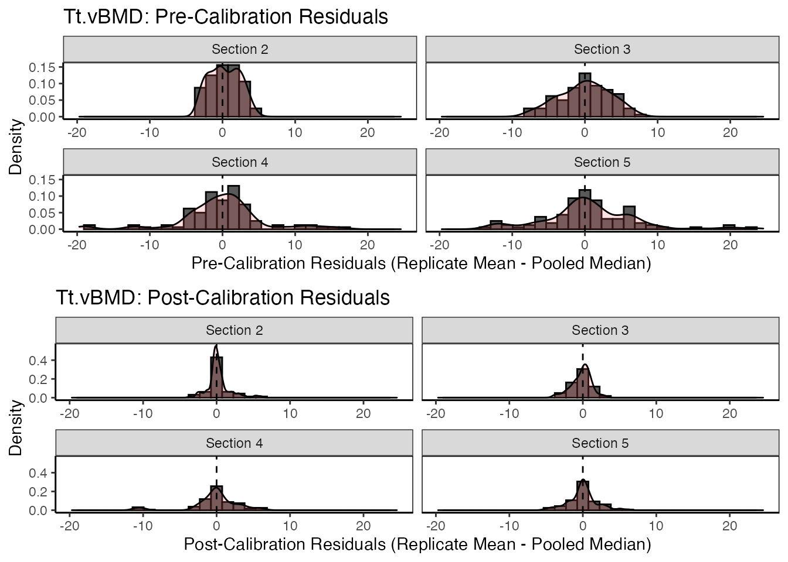

Cross-Calibration
Nicholas Mikolajewicz
2020-05-29
Source:vignettes/a03_Cross-Calibration.Rmd
a03_Cross-Calibration.RmdCross-Calibration
Imaging phantoms are used to cross-calibrate instruments/scanners thereby enabling direct comparion of measurements obtained by different instruments. In general, a reference instrument is selected, and pair-wise linear regression of imaging phantom measurements is used to calibrate all other instruments to the reference. For HR-pQCT, imaging phantoms (e.g., QC1, EFP) are designed to mimic varying degrees of bone mineral densities, along with certain other properties, thereby allowing calibration using multiple points of reference.
Data import and prep
Prior to analysis, import data and preprocess as described in the Getting Started Vignette.
# import EFP and QC1 imaging phantom data df.qc1 <-qc1 df.efp <- efp # omit water-mimetic resin sections df.qc1 <- dplyr::filter(df.qc1, section != 1) # remove water mimic section 1 df.efp <- dplyr::filter(df.efp, section != 4) # remove water mimic section 4 df.efp$section <- as.numeric(as.character(df.efp$section)) df.qc1$section <- as.numeric(as.character(df.qc1$section)) # combine datasets (ensure replicate sets aren't mixed) df.qc1$replicateSet <- paste("q", df.qc1$replicateSet, sep = "") df.efp$replicateSet <- paste("e", df.efp$replicateSet, sep = "") all.data <- bind_rows(df.qc1, df.efp) # create Calibration Object co <- createCalibrationObject(all.data) # get list of feature subsets to analyze analyze.these <- analyzeWhich(co, include.parameters = c("Tt.vBMD")) # preprocess/filter data co <- preprocessData(object = co, analyze.which = analyze.these, new.assay.name = "preprocessed.data", which.assay = "input")
Identify reference
Before we fit pair-wise calibration curves, we must first specify our point of reference with respect to the instrument (denoted reference.site) and time (if scans were obtained at multiple timepoints).
We propose designating the reference site as the site that reports the most precise and accurate measurements. For a detailed description of how most precise and accurate site is derived, refer to our companion paper (citation placeholder). For the reference time, we recommend using baseline (t=0) measurements. In general, it is good practice to provide justification for the choice of reference.
Using our running example, phantom measurements obtained by the “Oregon” scanner were the most precise and accurate.
reference.site <- identifyReference(co) reference.site
#> EFP QC1
#> "JohnHopkins" "Oregon"Using the consistencyPlot function, we can explore how each site ranked across all parameters. Ranking is based on a minimized MSE-criteria, computed as the mean-squared error (MSE) between site-specific measures and the median measurement values pooled across all timePoint and site features. The reference.site is then selected as the site which has the highest average ranking across all parameters. The tile plot enables us to examine how each site ranked in a parameter-specific manner.
# generate site ranking plots qc1.c.plt <- consistencyPlot(co, which.plot = "tile", var2plot = "mse", which.phantom = "QC1") qc1.c.plt <- qc1.c.plt +labs(subtitle = "QC1") efp.c.plt <- consistencyPlot(co, which.plot = "tile", var2plot = "mse", which.phantom = "EFP") efp.c.plt <- efp.c.plt +labs(subtitle = "EFP") # combine plots cowplot::plot_grid(qc1.c.plt, efp.c.plt)

To retrieve the scores, we can call the same funciton identifyReference and indicate that we want scores with return.scores = T
# specify parameter of interest par4study <- "Tt.vBMD" # get reference scores reference.scores <- identifyReference(co, which.phantom = c("EFP", "QC1"), which.parameter = par4study, pool.phantoms = T, return.scores = T) # print data.table (reference.scores[["QC1"]]) %>% datatable(extensions = 'Buttons', options = list( dom = 'Bfrtip', buttons = c('copy', 'csv', 'excel', 'pdf', 'print')) )
Fit calibration curves
To fit separate calibration curves to the two different imaging phantoms (QC1 and EFP), first clone the preprocessed assays so that they can be calibrated in parallel.
# check which assays are available getAssay(co, which.assays = "all")
#> [1] "input" "preprocessed.data"# clone 'preprocessed.data' assay, once for each phantom that will be used for calibration co <- cloneAssay(co, which.assay = "preprocessed.data", cloned.assay.name = "EFP")
#>
#> 'preprocessed.data' was successfully clonedco <- cloneAssay(co, which.assay = "preprocessed.data", cloned.assay.name = "QC1")
#>
#> 'preprocessed.data' was successfully cloned# check that new assays are available in calibration object getAssay(co, which.assays = "all")
#> [1] "input" "preprocessed.data" "EFP"
#> [4] "QC1"Compute calibration equations for the designated reference site using fitCalibration. Note that we specify ‘Oregon’ as the reference site.
# fit calibration curves using EFP imaging phantom co <- fitCalibration(co, which.assay = "EFP", reference.site = "Oregon", which.phantom = "EFP", sig.intercept.only = F, which.center = "mean")
#>
#> fitCalibration results created for EFPgetCalibrationInfo(co, which.assay = "EFP")
#> Existing Calibration
#> Assay: EFP
#> Reference Site: Oregon
#> Reference Time: baseline
#> Phantom: EFP
#> Parameters: Tt.vBMD# fit calibration curves using QC1 imaging phantom co <- fitCalibration(co, which.assay = "QC1", reference.site = "Oregon", which.phantom = "QC1", sig.intercept.only = F, which.center = "mean")
#>
#> fitCalibration results created for QC1getCalibrationInfo(co, which.assay = "QC1")
#> Existing Calibration
#> Assay: QC1
#> Reference Site: Oregon
#> Reference Time: baseline
#> Phantom: QC1
#> Parameters: Tt.vBMDTip: Cross-calibration requires atleast 3 calibration points in each phantom. If less than 3 imaging phantom sections are detected in the data, an error will occur notifying the user.
Calibration equations
Once calibration equation have been computed, we can retrieve the results from the Calibration Object using getResults. Results can be directly exported to a spreadsheet from the interactive data table. Continuing with our example, we can examine the calibration curves fit for each imaging phantom.
# retrieve calibration results (as datatables) calibration.results.qc1 <-getResults(object = co, which.results = "calibration", # get calibrated data which.assay = "QC1", # QC1 calibrations format = 'df') # retrieve as data.frame calibration.results.efp <-getResults(object = co, which.results = "calibration", # get calibrated data which.assay = "EFP", # EFP calibrations format = 'df') # retrieve as data.frame # see what tables were generated names(calibration.results.qc1)
#> [1] "calibration.equations"names(calibration.results.efp)
#> [1] "calibration.equations"# show calibration equations for each imaging phantom showTable(calibration.results.qc1[["calibration.equations"]], as.dt = T)
showTable(calibration.results.efp[["calibration.equations"]], as.dt = T)
Visualization
To visualize the calibration curves, use the calibrationPlot function.
calibrationPlot(co, which.assay = "QC1", which.parameter = "Tt.vBMD", return.plt.handle = F, color.option = "A", color.begin = 0, color.end = 0.5)


calibrationPlot(co, which.assay = "EFP", which.parameter = "Tt.vBMD", return.plt.handle = F, color.option = "A", color.begin = 0, color.end = 0.5)


Data calibration
To calibrate phantom data using the computed calibration equations, use the calibrateData function. This will generate a new dataset called calibrated.data within the specified Assay.
# calibrate data co <- calibrateData(co, which.assay = "QC1", verbose = F) co <- calibrateData(co, which.assay = "EFP", verbose = F)
The current Assay now contains two datasets; uncalibrated and calibrated.
# show available datasets getDatasets(co, which.assay = "QC1")
#> [1] "uncalibrated" "calibrated"getDatasets(co, which.assay = "EFP")
#> [1] "uncalibrated" "calibrated"Diagnostics
A diagnostic plot comparing pre- and post-calibrated values is useful in determining whether all sites were successfully calibrated. XcalRep enables users to generate three kinds of diagnostic plots using the diagnosticPlot function.
1) Diagnostic Line Plot: Pre- and post-calibration values are plotted on the x and y axes, respectively, and 2 sets of reference curves are overlaid; Horizontal dashed references denote section-specific reference values which were used for calibration. The diagonal dashed reference is the line of equality (x = y) and the reference site lies along this curve.
diagnosticPlot(co, which.assay = "QC1", which.parameter = "Tt.vBMD", which.plot = "line")

2) Diagnostic Bar Plot: Pre- and post-calibration values are plotted on a horizontal bar plot, and the median value is shown as a dashed reference.
diagnosticPlot(co, which.assay = "QC1", which.parameter = "Tt.vBMD", which.plot = "bar", fix.axis = T)

3) Diagnostic Residual Distributions: The distribution of pre- and post-calibration residuals is visualized using a histoogram and overlaid density curve. Residuals are here defined as the difference between the replicate mean and pooled median.
diagnosticPlot(co, which.assay = "QC1", which.parameter = "Tt.vBMD", which.plot = "residual", fix.axis = T)
